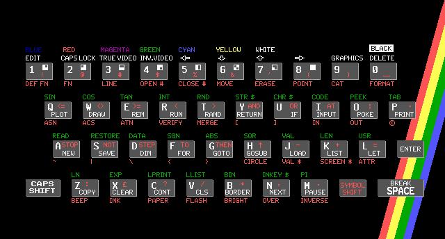

Linguagens e Ambientes de Programação (2017/2018)
Teórica 09 (05/abr/2018)
Tudo sobre a execução de programas.
Plataformas computacionais.
Implementação de linguagens de programação: Compilação e Interpretação.
Técnicas de implementação mistas. Máquinas virtuais.
Níveis de interpretação.
Detalhes da implementação de interpretadores.
Detalhes da implementação de compiladores.
Ligação.
Carregamento.
Plataformas computacionais
É demasiado simplista dizer que os programas correm sobre hardware. É mais rigoroso dizer que os programas correm sobre uma plataforma computacional.
Uma plataforma é constituída pelos seguintes elementos:
- Hardware - Inclui: processador, memória, canais de entrada e saída;
- Sistema operativo - Software que faz a gestão dos recursos do computador e que fornece aos programas uma interface para aceder a esses recursos.
- Bibliotecas - São componentes de software opcionais que fornecem aos programas interfaces especializadas e de mais alto nível para o sistema operativo.
Exemplos de plataformas:
- x86/Microsoft Windows
- x86/Mac OS
- PowerPC/Mac OS
- x86/Linux
- Mips/Linux
- Sparc/Linux
- Java (é independente do hardware)
- .Net (é independente do hardware)
Implementação de linguagens de programação: Compilação e Interpretação
A generalidade das linguagens de programação suporta conceitos e abstrações mais sofisticados do que os mecanismos suportados pelas plataformas computacionais usuais. Assim, para conseguir executar numa plataforma computacional programas escritos numa linguagem de alto nível é preciso recorrer a uma das duas seguintes técnicas, ou a uma mistura das duas:
Compilação
Um compilador é um programa tradutor com as seguintes características:
- Converte programas duma linguagem de programação de alto nível para programas equivalentes escritos numa linguagem de mais baixo nível.
- A linguagem de mais baixo nível é geralmente linguagem-máquina, o que já permite que cada programa possa ser executado diretamente na plataforma computacional.
- O programa executável, gerado pelo compilador, pode ser corrido as vezes que se quiser, sem ser preciso voltar a usar o compilador.
O seguinte diagrama descreve a situação:
--------------
Programa fonte --> | Compilador | --> Programa objeto
--------------
-------------------
Input --> | Programa objeto | --> Resultados
-------------------
Alguns exemplos. Na plataforma Intel/Linux usada nas aulas práticas estão disponíveis os seguintes compiladores:
- Compilador de OCaml chamado ocamlopt.
- Compilador de C/C++ chamado gcc.
- Compilador de Java chamado gcj.
Todos estes compiladores geram código nativo.
Interpretação
Um interpretador é um programa "executor" com as seguintes características:
- Executa diretamente o programa fonte.
- Para correr o programa novamente é necessário voltar a usar o interpretador.
O seguinte diagrama descreve a situação:
-----------------
Programa fonte, Input --> | Interpretador | --> Resultados
-----------------
Alguns exemplos. Na plataforma usada nas aulas práticas está pelo menos disponível um interpretador:
- Um interpretador de OCaml chamado ocaml.
Vantagens/Desvantagens
Vantagens de usar um compilador:
- Grande velocidade de execução (depois da compilação ter terminado).
- Os programas podem ser distribuídos sob a forma executável, sem ser necessário fornecer uma cópia do código fonte do programa.
Os ganhos de eficiência dos compiladores devem-se à seguinte razão:
- O compilador toma muitas decisões ao processar o programa fonte (considere por exemplo o acesso a variáveis). O ganho está no facto dessas decisões já não terem de ser tomadas novamente durante a execução de programa. Além disso, se o programa contiver ciclos ou funções recursivas, esta questão torna-se ainda mais importante - um interpretador estaria sempre, repetidamente, a tomar as mesmas decisões.
Vantagens de usar um interpretador:
- Maior rapidez na escrita e teste de programas, pois podem correr-se os programas diretamente, sem esperar pela compilação.
- Melhores diagnósticos de erros.
- Maior potencial para escrever source-level debuggers de qualidade.
- Maior facilidade em suportar linguagem reflexivas, ou seja linguagens em que os programas se podem observar a eles mesmos e automodificarem-se durante a execução. Exemplos de linguagens destas: Prolog, Lisp.
Técnicas de implementação mistas
São bem claras as diferenças entre os conceitos de compilação e interpretação. Contudo a implementação de muitas linguagens de programação acaba por baseada numa mistura de compilação e de interpretação.
Vejamos três situações diferentes:
Coexistência de código compilado e de código interpretado
Algumas implementações da linguagem Prolog permitem a coexistência de código compilado com código interpretado.
Predicados declarados como estáticos (i.e. que não podem ser alterados em tempo de execução) são normalmente compilados; predicados declarados como dinâmicos (i.e. que podem ser modificados em tempo de execução) são obrigatoriamente interpretados.
A vantagem desta técnica é que permite obter velocidade de execução nas partes estáticas do programa, e a flexibilidade necessária nas partes dinamicamente modificáveis do programa.
Máquinas virtuais
Outra forma de implementação mista de linguagens de programação envolve a invenção duma linguagem intermédia para a qual se escreve um interpretador. O termo máquina virtual é muitas vezes usado, tanto para designar a linguagem intermédia, como o seu interpretador.
Agora basta escrever um compilador para traduzir programas da linguagem de alto nível para código intermédio. O resultado da tradução pode depois ser executado na máquina virtual.
O seguinte diagrama descreve a situação:
--------------
Programa fonte --> | Compilador | --> Programa intermédio
--------------
-------------------
Programa intermédio, Input --> | Máquina virtual | --> Resultados
-------------------
É muito importante que a máquina virtual seja criada com três objetivos em mente:
- As suas particularidades devem facilitar a tradução dos programas fonte para código intermédio.
- Deve ser simples escrever um interpretador razoavelmente eficiente para ela.
- Deve favorecer a compacidade do código intermédio.
Vantagens da técnica da máquina virtual:
- O compilador torna-se mais simples de escrever.
- A velocidade de execução é mediana: melhor do que num interpretador puro mas pior do que num compilador nativo.
- Os programas intermédios podem ser executados em qualquer plataforma onde a máquina virtual esteja disponível.
- Os programas intermédios são geralmente bastante compactos pelo que podem ser transferidos através da WEB mais rapidamente.
Eis alguns exemplos de implementações baseadas em máquinas virtuais:
- Compilador de OCaml chamado ocamlc que gera código para uma máquina virtual chamada CAML (Categorical Abstract Machine Language).
- Compilador de Java chamado javac que gera código para uma máquina virtual chamada JVM (Java Virtual Machine).
- Compilador de C# chamado mcs que gera código para uma máquina virtual chamada CLR (Common Language Runtime).
Máquinas virtuais just-in-time
Quando é muito importante tornar a implementação duma máquina virtual tão rápida quanto possível, torna-se necessário implementar o respetivo interpretador usando a técnica just-in-time (JIT), também conhecida por tradução dinâmica.
A ideia da técnica é simples, embora a implementação seja complicada de fazer. Durante a execução do programa intermédio, este vai sendo dinamicamente traduzido em código-máquina que é imediatamente executado. A tradução dinâmica é aplicada a unidades a unidades de código, tais como métodos ou funções, e a implementação gere uma cache de unidades de código já processadas. Ao fim de algum tempo de execução, quando a maior parte do código já foi traduzido, consegue-se atingir uma velocidade de execução que ronda os 70% da velocidade de execução dum programa compilado nativamente.
Alguns exemplos de máquinas virtuais para as quais existem versões JIT:
- JVM - Java Virtual Machine.
- CLR - Common Language Runtime.
Ponto de vista externo e interno
As técnicas de implementação mistas, fazem esbater a fronteira entre as noções de compilação e de interpretação. Por vezes, para caracterizar a implementação duma linguagem com rigor, temos de considerar dois pontos de vista:
- Um ponto de vista externo que considera a implementação dos compiladores e interpretadores como caixas negras.
- Um ponto de vista interno que se interessa pela implementação interna dos compiladores e interpretadores.
Para discutir os dois pontos de vista, vamos considerar uma máquina virtual just-in-time, por exemplo a JVM:
- Do ponto de vista externo, uma máquina virtual just-in-time é um simples interpretador, pois constitui um programa que permite executar diretamente programas (neste caso escritos na chamada linguagem intermédia).
- Do ponto de vista interno, uma máquina virtual just-in-time é um complexo sistema que intercala a execução dum compilador nativo com a execução de porções de código máquina diretamente pelo hardware.
Consideremos agora o interpretador de OCaml ocaml, muito usado nas nossas aulas práticas.
- Do ponto de vista externo, trata-se dum interpretador, pois é visível que ele permite executar diretamente programas escritos em OCaml.
- No entanto, consultando a documentação, aprende-se que, do ponto de vista interno, é um compilador/interpretador em duas fases, pois ele compila internamente os programas fonte para código da máquina virtual CAML, sendo o código gerado internamente imediatamente executado pela máquina virtual.
Consideremos agora a arquitetura de hardware Intel-32. Claramente um processador da Intel implementa uma linguagem que se chama linguagem máquina. Será que deve ser encarado como um compilador ou um interpretador.
- Do ponto de vista externo, trata-se dum interpretador, pois é notório que ele permite executar diretamente programas escritos em linguagem máquina.
- No entanto, o processador compila internamente a linguagem máquina para uma linguagem de mais baixo nível chamada de microcódigo. Depois, é o microcódigo que efetua o trabalho útil do programa, ao ser executado por um interpretador implementado em hardware. São as instruções de microcódigo que atuam sobre os circuitos físicos do processador.
Níveis de interpretação
Vejamos os três níveis de interpretação envolvidos na execução dum programa em Java sobre uma JVM implementada em hardware da Intel:
- Interpretador de microcódigo implementado dentro do processador físico.
- Interpretador de código-máquina - é o processador físico.
- Interpretador da JVM - implementado por software.
Podem existir níveis de interpretação ainda menos elevados:
- A arquitetura da Motorola MC68000 inclui nano-código, a mais baixo nível do que o microcódigo.
E podem existir níveis de interpretação ainda mais elevados:
- Uma forma popular de implementar a linguagem Prolog é através da escrita dum interpretador em Java (porque isso facilita a interoperabilidade das duas linguagens).
- O nosso CLIP está implementado numa linguagem chamada Compass. Esta linguagem está implementada como um interpretador sobre a linguagem em Prolog.
Já sabemos que um interpretador é um programa que executa diretamente programas fonte.
Código interpretado é geralmente mais lento (por vezes, 10 vezes mais lento!) do que código compilado. Algumas razões:
- O interpretador tem de analisar cada parte do programa antes de a executar, e tem de a voltar a analisar sempre que a quiser voltar a executar (por exemplo, num ciclo). Por seu lado o compilador executa o código diretamente, sem perdas de tempo, pois a analise do programa já foi efetuada anteriormente, em tempo de compilação.
- Outra razão pela qual um interpretador é mais lento prende-se com o acesso às variáveis do programa. Um interpretador gasta imenso tempo a mapear dinamicamente os nomes das variáveis do programa em células de memória (geralmente com a ajuda duma hash table). Por seu lado um compilador associa endereços fixos às variáveis do programa, pelo que o acesso às variáveis é praticamente instantâneo em tempo de execução.
Um aspeto importante da interpretação é a forma como o interpretador lida com o texto do programa fonte. Há varias técnicas que têm sido usadas historicamente.
Interpretação direta
Nos interpretadores mais rudimentares, o texto é carregado em memória e é usado diretamente como matéria prima para a execução dos programas.
Os primeiros interpretadores de Basic, em meados dos anos 60, foram feitos desta forma. O manual da linguagem recomendava que não se escrevessem muitos comentários para os programas correrem mais rapidamente. Com efeito, os mesmos comentários eram lidos (e ignorados) sempre que uma dada parte do programa era executada (por exemplo, num ciclo).
Também convinha escolher variáveis com nomes curtos, para acelerar a execução dos programas.
Preprocessamento com identificação de tokens
A maioria dos interpretadores faz algum processamento do ficheiro fonte no momento do carregamento. Tipicamente, os comentários e espaços em branco são removidos, e todas as sequências de caracteres significativas são agrupadas em tokens, ou seja em símbolos que representam palavras reservadas, números, nomes de variáveis, etc.
Durante a interpretação, a matéria prima para a execução dos programas já não são sequências de caracteres, mas sim sequências de tokens. Consegue-se assim obter maior eficiência
O Basic do ZX Spectrum
Uma variante curiosa desta técnica foi usada na implementação do Basic do ZX Spectrum. O ZX Spectrum foi um computador pessoal muito popular na Europa durante os anos 80. Os programas podiam ser carregados a partir duma cassete áudio ou ser metidos à mão. Quando os programas eram metidos à mão, o editor de texto obrigava o utilizador a introduzir as palavras reservadas como tokens, o que era possível devido ao curioso teclado.

Preprocessamento com identificação de árvore sintática
Muitos interpretadores modernos efetuam um processamento bastante sofisticado do ficheiro fonte, no momento do carregamento. Além de identificarem todos os tokens, também identificam a estrutura sintática do programa de entrada e constroem em memória a correspondente árvore sintática (parse tree).
Durante a interpretação, a matéria prima para a execução dos programas é a árvore sintática. Consegue-se assim obter ainda maior eficiência.
Interpretador ou compilador?
Note que a identificação dos tokens e a construção da árvore sintática correspondem às duas primeiras fases de processamento dos compiladores tradicionais. Realmente, para aumentar a eficiência dum interpretador é preciso integrar nele alguma funcionalidade típica dos compiladores. Prosseguindo nesta linha de integrar mais e mais funcionalidade dos compiladores num interpretador, em breve se chega à técnica mista das máquinas virtuais, estudada da aula anterior. Do ponto de vista interno, já deixámos de ter um interpretador, e passámos a ter um sistema misto constituído por um compilador que gera código intermédio e um interpretador duma máquina virtual.
Detalhes da implementação de compiladores
Num compilador típico, a compilação evolui ao longo duma série de fases. Cada fase descobre informação que é necessária nas fases seguintes, ou então transforma o programa numa forma que é requerida pela fase seguinte.
- Leitura de caracteres do ficheiro fonte
sequência de caracteres ->
- Análise lexical (scanner)
-> sequência de tokens ->
- Análise sintática (parser)
- Análise semântica
- Melhoramento e completação da árvore Abstract
-> árvore Abstract melhorada ->
- Geração de código intermédio
- Otimização de código intermédio
-> código intermédio otimizado ->
- Geração de código máquina
-> código máquina executável
Para simplificar as discussões anteriores relativas a compiladores, temos vindo a omitir qualquer referência à questão da ligação de ficheiros objeto. Vamos tratar agora dessa questão que não pode ser ignorada quando se discute o tema da implementação de linguagens de programação.
Código fonte e código objeto
Um programa é muitas vezes constituído por diversos ficheiros fonte, sendo o conjunto habitualmente designado por código fonte do programa. Exemplos:
a.c b.c --- código fonte dum programa em C
a.ml b.ml --- código fonte dum programa em ML
Quando o compilador processa o código fonte dum programa, o compilador gera um ficheiro objeto distinto por cada ficheiro fonte. Exemplos:
gcc -c a.c b.c --> a.o b.o
ocamlc -c a.ml b.ml --> a.cmo b.cmo
O conjunto dos ficheiros objeto chama-se código objeto.
Ligador
Depois de compilado o código fonte, para se obter o programa executável é preciso usar um programa ligador que junta os diversos ficheiros objeto num único programa executável. Na altura de ligar um programa é preciso também indicar quais são as bibliotecas (arquivos de ficheiros objetos predefinidos) que interessa juntar ao programa.
Em Linux, o ligador chama-se ld e pode ser invocado diretamente pelo utilizador, se tal for desejado. Mas geralmente é mais prático invocar indiretamente o ligador através do comando de compilação. Em todo o caso, veja o que diz o início do manual do comando ld:
$ man ld
LD(1) GNU Development Tools LD(1)
NAME
ld - The GNU linker
SYNOPSIS
ld [options] objfile ...
DESCRIPTION
ld combines a number of object and archive files, relocates their data
and ties up symbol references. Usually the last step in compiling a
program is to run ld.
|
No Linux usa-se a opção "-o" na linha de comando dos compiladores serve para invocar indiretamente o ligador como último passo da compilação. Exemplos:
ocaml -o prog a.cmo b.cmo --> prog
gcc -o prog a.o b.o --> prog
Outra missão do ligador é resolver as referências cruzadas de nomes globais que podem ocorrem nos diversos ficheiros object. Para perceber o que está em causa vamos observar a tabela de símbolos e informação de relocação que é guardada dentro do ficheiro object correspondente ao seguinte ficheiro fonte "a.c":
/* File a.c */
/* This is a C source file */
#include <stdio.h>
extern int g(int) ;
extern int global_e ;
int global_x, global_y, global_z ;
int global_a = 123, global_b = 123, global_c = 124 ;
int f(int x)
{
return x + global_a ;
}
int main()
{
printf("%d", f(2) + g(3)) ;
return 0 ;
}
|
O comando nm do Linux mostra os símbolos e informação de relocação de ficheiros-objeto individuais. Aplicando nm ao ficheiro object "a.o", obtém-se o seguinte:
amd@sunra2:z$ nm a.o
00000000 T f
U g
00000000 D global_a
00000004 D global_b
00000008 D global_c
00000004 C global_x
00000004 C global_y
00000004 C global_z
0000000d T main
U printf
O carregador é a componente do núcleo do sistema operativo que trata de carregar em memória os programas para depois os executar.
No Linux, execve é o nome da chamada ao sistema que permite usar o carregador. Leia o que diz o início do manual do comando execve:
$ man execve
EXECVE(2) Linux Programmer's Manual EXECVE(2)
NAME
execve - execute program
SYNOPSIS
#include <unistd.h>
int execve(const char *filename, char *const argv[],
char *const envp[]);
DESCRIPTION
execve() executes the program pointed to by filename. filename must be
either a binary executable, or a script starting with a line of the
form:
#! interpreter [optional-arg]
For details of the latter case, see "Interpreter scripts" below.
argv is an array of argument strings passed to the new program. envp
is an array of strings, conventionally of the form key=value, which are
passed as environment to the new program. Both argv and envp must be
terminated by a null pointer. The argument vector and environment can
be accessed by the called program's main function, when it is defined
as:
int main(int argc, char *argv[], char *envp[]).
execve() does not return on success, and the text, data, bss, and stack
of the calling process are overwritten by that of the program loaded.
|
Em algumas plataformas, e.g. System/360 da IBM, o carregador tem a tarefa de efetuar relocação de endereços, porque o hardware só suporta endereçamento absoluto.
Nas plataformas modernas está geralmente disponível um segundo carregador - um carregador dinâmico - que permite carregar bibliotecas dinâmicas a meio da execução dum programa. Em Windows as bibliotecas dinâmicas são guardadas em ficheiros com extensão "dll". No Linux a extensão das bibliotecas dinâmicas é "so".
#120